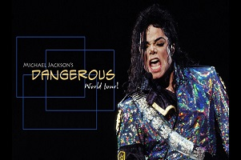
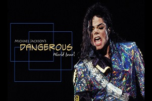
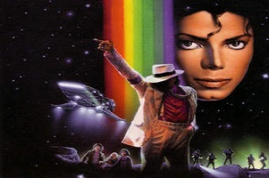
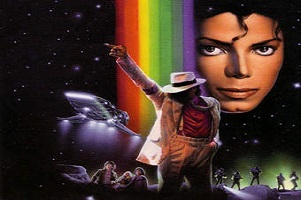

Michael Joseph Jackson (Gary, 29 de agosto de 1958 — Los Angeles, 25 de junho de 2009) foi um cantor, compositor, dançarino, produtor, empresário, arranjador vocal, filantropo, pacifista e ativista estadunidense. Segundo a revista Rolling Stone, faturou em vida cerca de sete bilhões de dólares, tornando-se o artista mais rico da história. Um ano após sua morte ainda faturou cerca de um bilhão de dólares. Começou a cantar e a dançar aos cinco anos de idade, iniciando-se na carreira profissional aos onze anos como vocalista do grupo Jackson 5; Em 1971, iniciou a carreira solo, mesmo permanecendo como membro do grupo. Reconhecido nos anos seguintes como Rei do Pop (do inglês: King Of Pop), cinco de seus álbuns de estúdio se tornaram os mais vendidos mundialmente de todos os tempos: Off the Wall (1979), Thriller (1982), Bad (1987), Dangerous (1991) e HIStory (1995). Lançou-se em carreira solo no início da década de 1970, ainda pela Motown, gravadora responsável pelo sucesso do grupo formado por ele e os irmãos.
 

 

A vida artística de 'Jacko', como era conhecido, começou como uma criança no grupo que ele integrou com seus irmãos; O Jackson Five nos anos sessenta. Sua carreira solo está no caminho certo quando seu talento e música estão sob o comando de Quincy Jones, o diretor, compositor e produtor musical que descobre um gênio em Michael Jackson que vai muito além da habilidade artística de um cantor e compositor. MAIS INFORMAÇÃO O mundo chora a morte do 'Rei do Pop' Médico de Jackson nega ter injetado Demerol As incógnitas continuam seis dias após a morte de Michael Jackson Michael Jackson, o ídolo da música pop, morre aos 50 anos Michael Jackson precisa de um transplante de pulmão, de acordo com 'The Sun' A morte de Michael Jackson provoca a venda de seus discos Esperando pela autópsia de Michael Jackson O fantasma de Michael Jackson? Fãs, preparados para o funeral de Michael Jackson O julgamento da morte de Michael Jackson começa em Los Angeles Michael Jackson: a denúncia de abuso sexual que encerrou sua carreira Michael Jackson, o rei do pop morre Michael Jackson deixa dívidas consideráveis e um retorno frustrado Obama qualifica Michael Jackson como um "artista espetacular" e um "ícone da música" A autópsia de Michael Jackson conclui sem estabelecer a causa da morte A família pede uma segunda autópsia para esclarecer a morte de Michael Jackson Jackson tem um corpo elástico único para fazer incríveis piruetas de dança e um show musical como nunca antes. Com ele, o videoclipe é popularizado como uma nova forma de arte musical e televisiva.
Em 1982, o fenômeno mais importante na vida do cantor acontece e deixa um marco ainda não superado na história da música: Com Thriller, o artista se estabelece como uma figura mundial e consegue se tornar o álbum mais vendido de todos os tempos, fato que ainda não foi superado. A partir daquele momento, a figura do jovem negro que se encanta com sua arte, sua música e sua dança começa a mudar, à medida que começam os escândalos que cercam sua vida. Sua vida privada começa a se tornar um mistério, os meios de comunicação daqueles tempos destacam as excentricidades do gênio pop, que inicia um processo de mudança física, com várias cirurgias plásticas para modificar seu rosto. Nariz, queixo, olhos ... tudo começa a mudar e, gradualmente, a cor da sua pele começa a clarear, tornando-se completamente branca. Centenas de lendas foram tecidas ao seu redor, mas a qualidade de suas músicas em cada álbum e a natureza espetacular de suas apresentações aumentaram o mito artístico. Seu último álbum é publicado em 2001, Privacidade, e a partir daí começa uma deterioração profissional, pessoal e artística do rei do pop. O escândalo envolve-o em 1993, quando o pai de um menor o denuncia por supostos abusos sexuais cometidos na famosa mansão de "Neverland", um parque de diversões que o artista convidava as crianças a passar dias inteiros. A alegada filantropia foi aparentemente cercada por suspeitas de comportamento pedófilo do artista com seus convidados. Houve acusações de várias testemunhas sobre o comportamento estranho de Jackson. No entanto, a justiça decretou a demissão em 1994